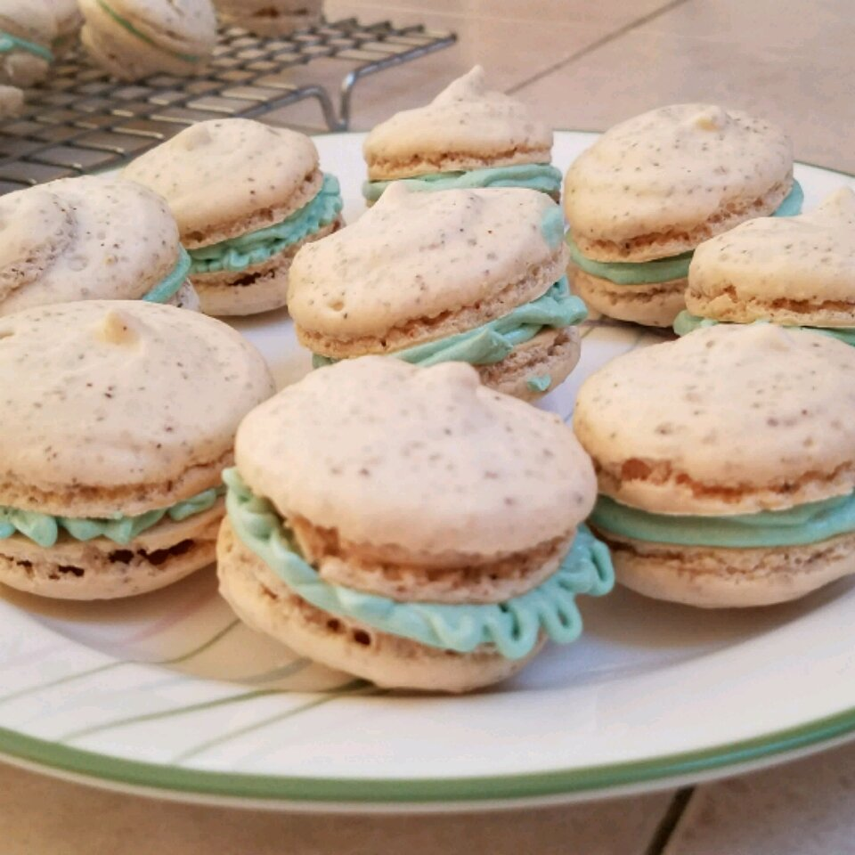

Macarons

Description
To ensure macarons are the same size, you can trace 1-inch circles with a pencil on parchment paper, then flip the paper and use the circles as a guide when piping.
If you want to dye the macaron batter, add food coloring to egg whites in step 2; make the mixture a few shades darker than desired as baking will lighten the color.
Use colors in powders or gel form - liquid food coloring may add too much moisture to the egg mixture and change the consistency.
Ingredients
- 3 extra-large egg whites
- ⅓ cup white sugar
- 1 cups confectioners' sugar
- 1 cup almond flour
- Butter
Steps
- Preheat oven to 300 degrees F (150 degrees C). Line a baking sheet with parchment paper
- Beat egg whites in a glass, metal, or ceramic bowl with an electric mixer on medium speed until foamy, about 30 seconds.
Add white sugar and continue to beat until peaks are stiff enough they stay in place when the bowl is turned upside down, about 5 minutes.
- Preheat oven to 375 degrees F (190 degrees C).
- Bake in preheated oven for 25 minutes. Remove foil, and bake an additional 25 minutes.
Cool for 15 minutes before serving.